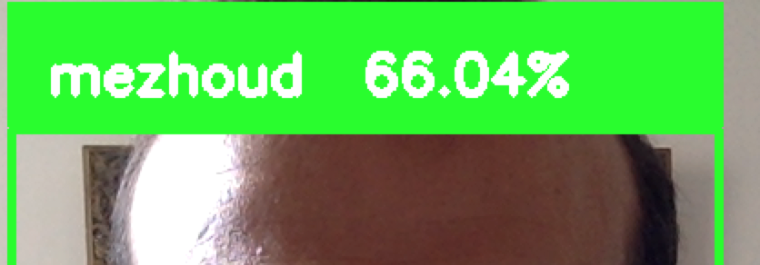

├── detect_face_get_X_Images.py*
├── haarcascade_frontalface_default.xml*
├── images_known_faces.Rmd*
├── images_known_faces.html*
├── recognise_faces_by_trained_model.py*
├── screenshot.png*
└── train_model_from_dataSet.py*
## Error in setwd("/Volumes/DATA/learn_by_example/face_recognition/dataset_generator_trained_model/"): cannot change working directory####################################################
# Modified by Nazmi Asri #
# Original code: http://thecodacus.com/ #
# All right reserved to the respective owner #
####################################################
# Import OpenCV2 for image processing
import cv2
import os
import glob
def assure_path_exists(path):
dir = os.path.dirname(path)
if not os.path.exists(dir):
os.makedirs(dir)
def detectAndDisplay(frame):
frame_gray = cv.cvtColor(frame, cv.COLOR_BGR2GRAY)
frame_gray = cv.equalizeHist(frame_gray)
# Start capturing video
vid_cam = cv2.VideoCapture(0)
# Detect object in video stream using Haarcascade Frontal Face
face_detector = cv2.CascadeClassifier('haarcascade_frontalface_default.xml')
# For each person, one face id
face_id = 1
# Initialize sample face image
count = 0
assure_path_exists("dataSet/")
# Start looping
while(True):
# Capture video frame
_, image_frame = vid_cam.read()
# Convert frame to grayscale
gray = cv2.cvtColor(image_frame, cv2.COLOR_BGR2GRAY)
# Detect frames of different sizes, list of faces rectangles
faces = face_detector.detectMultiScale(gray, 1.3, 5)
# Loops for each faces
for (x,y,w,h) in faces:
# Crop the image frame into rectangle
cv2.rectangle(image_frame, (x,y), (x+w,y+h), (255,0,0), 2)
# Increment sample face image
count += 1
# Save the captured image into the datasets folder
cv2.imwrite("dataSet/User." + str(face_id) + '.' + str(count) + ".jpg", gray[y:y+h,x:x+w])
# Display the video frame, with bounded rectangle on the person's face
cv2.imshow('frame', image_frame)
# Wait 5 seconds to take the next capture
cv2.waitKey(1)
# To stop taking video, press 'q' for at least 100ms
if 0xFF == ord('q'):
break
# If image taken reach 100, stop taking video
elif count>20:
# Stop video
vid_cam.release()
# Close all started windows
cv2.destroyAllWindows()
breakimport cv2
import os
import numpy as np
from PIL import Image
# Create Local Binary Patterns Histograms for face recognization
recognizer = cv2.face.LBPHFaceRecognizer_create()
# Using prebuilt frontal face training model, for face detection
detector = cv2.CascadeClassifier("haarcascade_frontalface_default.xml");
def getImagesAndLabels(path):
#get the path of all the files in the folder
imagePaths=[os.path.join(path,f) for f in os.listdir(path)]
#create empth face list
faceSamples=[]
#create empty ID list
Ids=[]
#now looping through all the image paths and loading the Ids and the images
for imagePath in imagePaths:
#loading the image and converting it to gray scale
pilImage=Image.open(imagePath).convert('L')
#Now we are converting the PIL image into numpy array
imageNp=np.array(pilImage,'uint8')
#getting the Id from the image
#Id=int(os.path.split(imagePath)[-1].split(".")[0])
Id = int(imagePath.split('.')[1])
# extract the face from the training image sample
faces=detector.detectMultiScale(imageNp)
#If a face is there then append that in the list as well as Id of it
for (x,y,w,h) in faces:
faceSamples.append(imageNp[y:y+h,x:x+w])
Ids.append(Id)
return faceSamples,Ids
faces,Ids = getImagesAndLabels('dataSet')
recognizer.train(faces, np.array(Ids))
recognizer.save('models/trained_model.yml')####################################################
# Modified by Nazmi Asri #
# Original code: http://thecodacus.com/ #
# All right reserved to the respective owner #
####################################################
# Import OpenCV2 for image processing
import cv2
import glob
# Import numpy for matrices calculations
import numpy as np
import os
def assure_path_exists(path):
dir = os.path.dirname(path)
if not os.path.exists(dir):
os.makedirs(dir)
def getNames_Ids(path):
#get the path of all the files in the folder
imagePaths=[os.path.join(path,f) for f in os.listdir(path)]
#create empth face list
names=[]
#create empty ID list
Ids=[]
#now looping through all the image paths and loading the Ids and the images
for imagePath in imagePaths:
#loading the image and converting it to gray scale
#pilImage=Image.open(imagePath).convert('L')
#Now we are converting the PIL image into numpy array
#imageNp=np.array(pilImage,'uint8')
#getting the Id from the image
#Id=int(os.path.split(imagePath)[-1].split(".")[0])
Id = int(imagePath.split('.')[1])
# get the name
name = str(os.path.basename(imagePath).split('.')[0])
# extract the face from the training image sample
#faces=detector.detectMultiScale(imageNp)
#If a face is there then append that in the list as well as Id of it
Ids.append(Id)
names.append(name)
return names,Ids
# Create Local Binary Patterns Histograms for face recognization
recognizer = cv2.face.LBPHFaceRecognizer_create()
assure_path_exists("models/")
# Load the trained mode
recognizer.read('models/trained_model.yml')
# Load prebuilt model for Frontal Face
cascadePath = "haarcascade_frontalface_default.xml"
# Create classifier from prebuilt model
faceCascade = cv2.CascadeClassifier(cascadePath);
# Set the font style
font = cv2.FONT_HERSHEY_SIMPLEX
# get names for Ids
names, Ids = getNames_Ids('dataSet')
# Initialize and start the video frame capture
cam = cv2.VideoCapture(0)
# Loop
while True:
# Read the video frame
ret, im =cam.read()
# Convert the captured frame into grayscale
gray = cv2.cvtColor(im,cv2.COLOR_BGR2GRAY)
# Get all face from the video frame
faces = faceCascade.detectMultiScale(gray, 1.2,5)
# For each face in faces
for(x,y,w,h) in faces:
# Create rectangle around the face
cv2.rectangle(im, (x-20,y-20), (x+w+20,y+h+20), (0,255,0), 4)
# Recognize the face belongs to which ID
Id, confidence = recognizer.predict(gray[y:y+h,x:x+w])
# get Name
name = names[Ids.index(Id)]
# Check the ID if exist
text = str(name + " {0:.2f}%").format(round(100 - confidence, 2))
# Put text describe who is in the picture
cv2.rectangle(im, (x-22,y-90), (x+w+22, y-22), (0,255,0), -1)
cv2.putText(im, text, (x,y-40), font, 1, (255,255,255), 3)
# Display the video frame with the bounded rectangle
cv2.imshow('Capture',im)
# If 'q' is pressed, close program
if cv2.waitKey(1) & 0xFF == ord('q'):
break
# Stop the camera